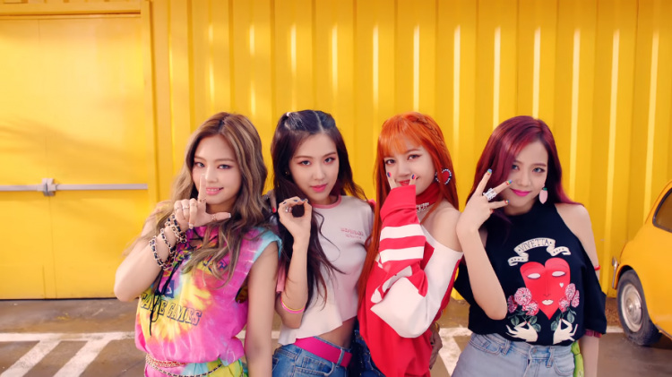
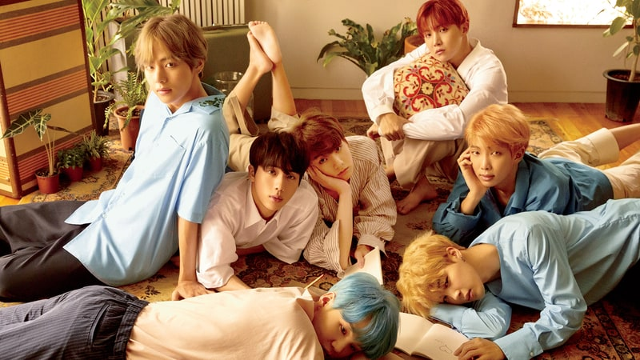
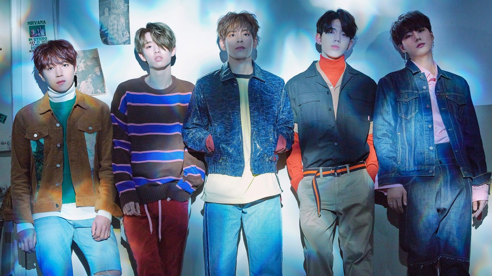
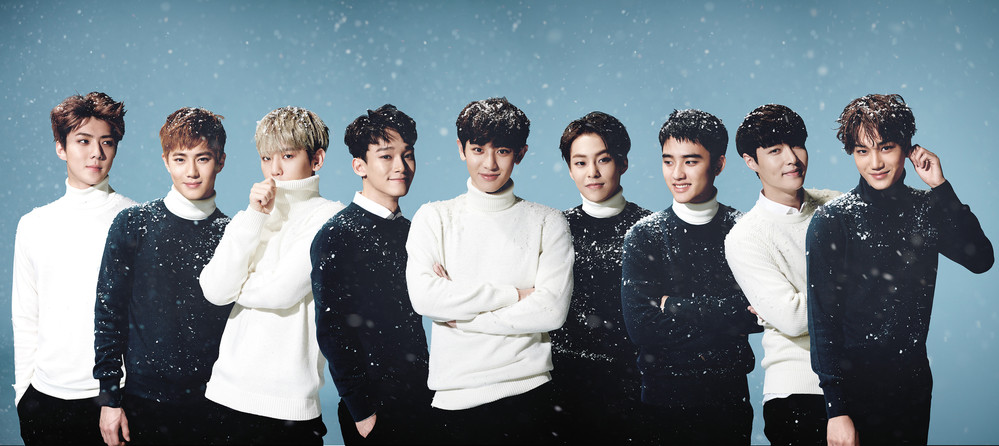
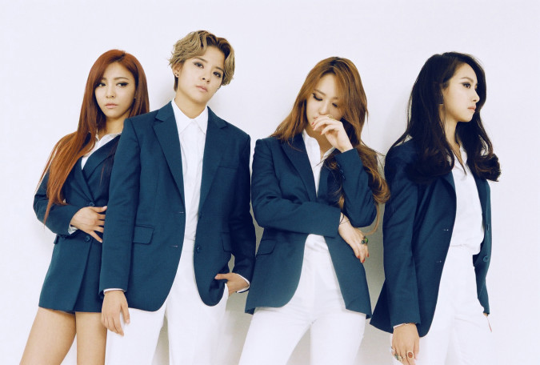
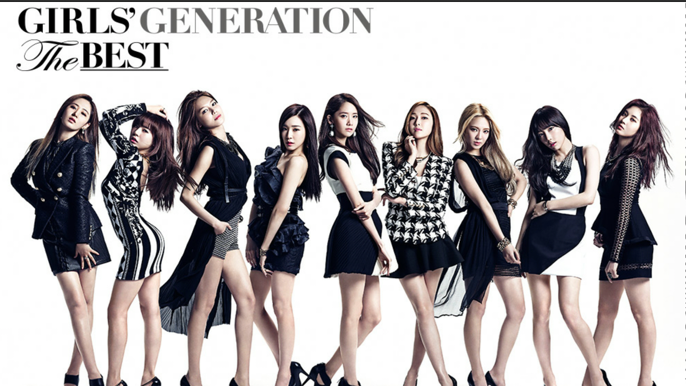
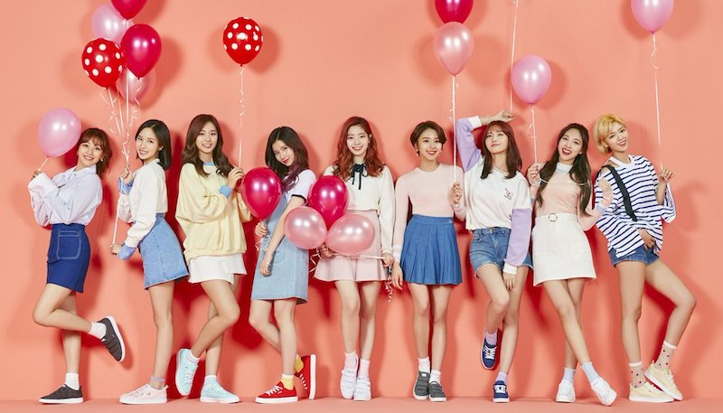

By Ruofan Chen
See also An Brief Introduction to K-pop
These are just some groups that I have included in this website. There are many other amazing artists I didn't include yet, so please don't be upset if groups you like are not here.
BIGBANG is a 5 people boy group formed by YG Entertainment© in 2006. They are extremely famous around the world and gained popularity with their talents but also for their personality and dedication to their fans. Some known songs by this group are "Fantastic Baby", "Bang Bang Bang", and "Day by Day".
BLACKPINK (or as BLΛƆKPIИK) is a four people girl group formed by YG Entertainment© in 2016. They gained a lot of attention overseas with their limited promotion since debut. Some known songs by this group are "Boombayah", "Whistle", "Playing with fire", and "As If It's Your Last".
Block B is a 7 people boy group formed by KQ Entertainment© in 2011. Within this group, you can find good song, good visuals, good dances, and the uniqueness of Block B. Some known songs by this group are "Toy", "H.E.R", and "Yesterday".
BTS is a 7 people boy group formed by Big Hit Entertainment© in 2013. This group has gained a lot of popularity due to its amazing music and has gained global recognition. Some known songs by this group are "Blood, Sweat & Tears", "Fire", "I Need U", and "DNA".
CNBLUE is a four people boy band formed by FNC Entertainment© in 2010. Although they try different concepts, they can easily fit and produce quality music. Some known songs by this group are "I'm a Loner", and Can't Stop".
DAY6 is a boy band formed by JYP Entertainment© in 2015. They are very talented and make majority of their own music. They are slowly gaining attention by their quality music. The existence of a member's youtube channel for vlogs also help them become more famous. Some known songs by this group are "Congratulations", "You Were Beautiful", and "I Smile".
EXO is a boy group formed by SM Entertainment© in 2012. They are currently very influential in all parts of the world, and very recently they performed at the closing ceremony of the 2018 PyeongChang Winter Olympics. They are definitely a group you would like! Some known songs by this group are "Growl", "Overdose", "Call Me Baby", "Sing for you", "Monster", "Lotto", "Ko Ko Bop", and "Power".
F(x) is a girl group formed by SM Entertainment© in 2009. They are known to have tried various different styles of music, and the members are also talented at different areas such as singing, acting, dancing, and production of music. Some known songs by this group are "Hot Summer", "Nu ABO", "4 walls", "Electric Shock" and "Rum Pum Pum Pum".
Girls' Generation is a girl group formed by SM Entertainment© in 2007. Originally it had 9 people, but one member was unfortunately told to leave the group. This group is very influential to the K-pop industry, and it helped shape the current idol system. The different concepts and talents portrayed in their comebacks attracted fans from all over the world. Some known songs by this group are "Gee", "Genie", "The Boys", "Mr. Mr.", "Party", "Mr. Taxi", and "Lion Heart".

Red Velvet is a five people girl group formed by SM Entertainment© in 2014. The group mainly uses the concept of "red" for hip-hop and more upbeat comebacks and the concept "velvet" for more ballad comebacks. Some known songs by this group are "Dumb Dumb", "Russian Roulette", "Red Flavor", "Peek-A-Boo", and "Bad Boy".

SHINEE is a five people boy group formed by SM Entertainment© in 2008. As the members debuted at a young age, through the comebacks the fans were able to see their growth and how they become more mature. The members are also very musically gifted, and many of their music were produced by themselves. Some known songs by this group are "Replay", "Lucifer", and "Sherlock".
Seventeen is a 14 people boy band formed by Pledis Entertainment© in 2015. The members are separated into different units that focuses on different parts of a successful idol: performance/dance, vocal, and hip-hop. They can also self supply with songs composed and arranged by group members and dance choreographed by group members. Some known songs by this group are "Very Nice", "Mansae", "CLAP", and "Don't Wanna Cry".
Super Junior is a boy group formed by SM Entertainment© in 2005. At its peak, the group had 13 members of different nationalities. For their recent promotion, the group only had 7. There are many quality music produced by this group and they are also very humorous people. Some known songs by this group are "Sorry Sorry", "Mr. Simple" and "Devil".
TWICE is a 9 people girl group formed by JYP Entertainment© in 2015. Twice is known for its bubbly concept and is very popular in many parts of Asia. Their diversity of the members also allows more growth in popularity in the future. Some known songs by this group are "Cheer Up", "TT", "Knock Knock", "Signal", "Likey", and "Heart Shaker".
Wonder Girls is a girl group formed by JYP Entertainment© in 2007. Unfortunately, this group has officially disbanded in 2017. Some known songs by this group are "Nobody", "Tell me", and "So Hot".
2NE1 is a girl group formed by YG Entertainment© in 2009. They were very influential as the main concept of the group is hip-hop and there wasn't many hip-hop girl groups. Unfortunately, this group has officially disbanded in 2017. Some known songs by this group are "Fire", "I Am the Best", "Lonely", and "Come Back Home".
Return to top.